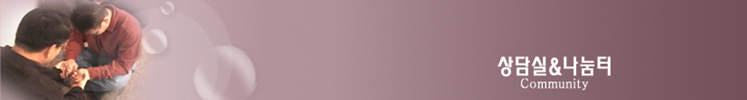
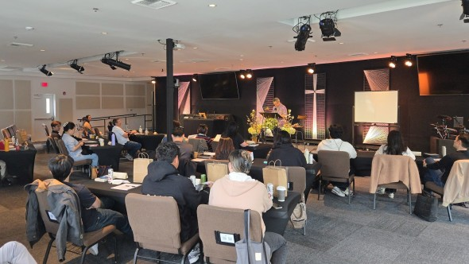
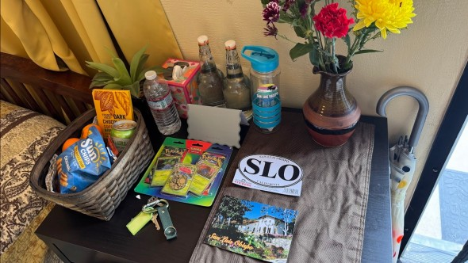
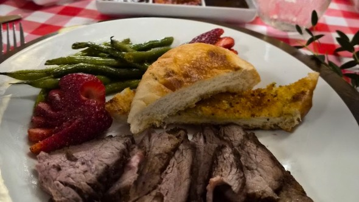
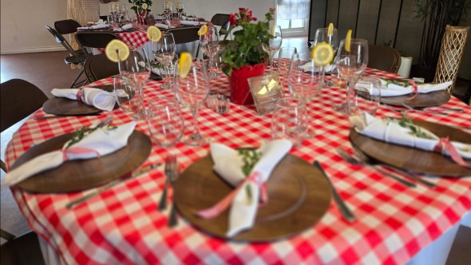
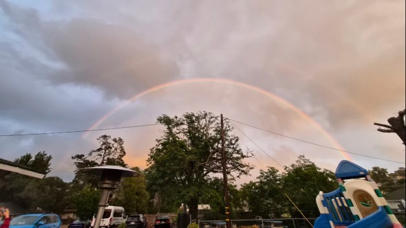

Reflection After Hosting House Church Seminar for Lay Leaders - 평신도 세미나 주최 후 소감문
We are located in a small city called San Luis Obispo in California, with a population of about 50,000 and a nearby university. Our church has been practicing house church ministry for the past 12 years. Currently, we have 14 English-speaking house churches and 2 Korean-speaking house churches. I personally came to faith in this church during my college years, and I have been serving as the pastor since 2000, leading both congregations.
We were truly blessed to host our very first Lay Leaders Seminar from April 10–12. As a church, we have committed to becoming a resource church for house church ministry, and this seminar was a significant step toward fulfilling that mission in North America. A total of 24 participants joined us—3 from New Jersey, 6 from Houston, and the rest from various parts of California.

Preparing for the seminar was both challenging and rewarding. We deep-cleaned our church campus to prepare spaces for teaching and meals, and many of our members opened their homes to host participants. As I prepared the teaching materials, I was also personally challenged, realizing areas where we as a church can continue to grow—for example, ensuring that each house church is intentionally praying for, investing in, and inviting at least five VIPs.

The seminar itself was a great blessing. We received tremendous support and guidance from New Life Fellowship during the preparation process, and we were able to follow what we had learned. Our entire church came together to serve, and many sacrificed greatly. Some even picked up participants at 2 a.m., doing everything they could to provide excellent hospitality.
We received many encouraging comments from participants, including remarks such as, “Did you hire servers? They are so professional.” Our goal was to honor the participants—many of whom are current or future shepherds—and to provide them with a meaningful and encouraging experience as they learned about house church ministry.


We are currently collecting stories and feedback from both participants and our church members as we reflect on this experience and consider how we can improve for future seminars. We are deeply thankful that we were able to bless these 24 participants, and we pray that this experience will not only strengthen their ministries but also help our own house church ministry grow in health—engaging more VIPs, seeing more people come to Christ, and experiencing both spiritual and numerical growth.
Above all, we are grateful to God for allowing us to be used in this way. We thank our shepherds who lovingly served and modeled house church life, and all the members who contributed through decorating, cooking, serving, transportation, and countless unseen acts of service.
We pray that our next seminar will be even more honoring to God.

God showed us a rainbow, too.
저희 교회는 캘리포니아의 San Luis Obispo라는 작은 도시에 위치해 있으며, 약 5만 명의 인구와 인근에 대학교가 있는 지역입니다. 저희 교회는 지난 12년 동안 가정교회 사역을 해오고 있으며, 현재 영어권 가정교회 14개와 한국어권 가정교회 2개가 있습니다. 저는 대학 시절 이 교회에서 예수님을 영접하게 되었고, 2000년부터 목회자로 섬기며 두 회중을 함께 인도하고 있습니다.
이번 4월 10일부터 12일까지 저희 교회에서 처음으로 평신도 세미나를 주최하게 된 것은 큰 은혜와 축복이었습니다. 저희 교회는 가정교회 사역을 위한 자원교회가 되는 것을 하나의 사명으로 품고 있는데, 이번 세미나는 북미 지역에서 그 사명을 감당하기 위한 중요한 첫걸음이었습니다. 총 24명의 참가자들이 함께하였으며, 뉴저지에서 3명, 휴스턴에서 6명, 그리고 나머지는 캘리포니아 여러 지역에서 오셨습니다.
세미나를 준비하는 과정은 쉽지 않았지만 동시에 큰 은혜의 시간이었습니다. 강의와 식사를 위해 교회 전체를 깨끗이 정리하고, 여러 성도님들께서 자신의 집을 열어 참가자들을 섬겨 주셨습니다. 또한 강의 자료를 준비하면서 저 개인적으로도 많은 도전을 받았고, 우리 교회가 앞으로 더 보완해야 할 부분들을 돌아보게 되었습니다. 예를 들어, 각 가정교회가 최소 다섯 명의 VIP를 정해 놓고 기도하며, 섬기고, 초청하는 일에 더욱 집중해야 한다는 것을 다시 확인하게 되었습니다.
세미나 자체도 큰 은혜 가운데 진행되었습니다. 준비 과정에서 New Life Fellowship의 도움과 지도를 많이 받았고, 배운 대로 잘 적용할 수 있었습니다. 무엇보다 교회 전체가 하나 되어 섬겼고, 많은 분들이 헌신적으로 수고해 주셨습니다. 어떤 분들은 새벽 2시에 참가자들을 픽업하기도 하며, 끝까지 최선을 다해 섬겨 주셨습니다.
참가자들로부터 많은 격려의 피드백도 받았습니다. “서빙하시는 분들이 너무 전문적인데, 따로 고용하신 분들인가요?”라는 말을 들을 정도로, 성도님들의 섬김이 인상적이었다고 합니다. 저희의 목표는 참가자들, 특히 목자/목녀님들과 예비 목자/목녀님들을 존중하고 귀하게 섬기며, 가정교회 사역을 배우는 가운데 의미 있고 은혜로운 시간을 경험하도록 돕는 것이었습니다.
현재 저희는 참가자들과 성도님들의 간증과 피드백을 모으며, 이번 세미나를 돌아보고 다음 세미나를 어떻게 더 잘 준비할 수 있을지 고민하고 있습니다. 이번 세미나를 통해 24명의 참가자들을 섬길 수 있었던 것을 감사하게 생각하며, 이 경험이 그분들의 사역에 도움이 될 뿐 아니라, 저희 교회의 가정교회 사역도 더욱 건강하게 성장하는 계기가 되기를 소망합니다. 더 많은 VIP들을 섬기고, 더 많은 영혼들이 예수님을 만나며, 영적·수적 성장이 함께 일어나기를 기도합니다.
무엇보다 저희를 사용해 주신 하나님께 모든 감사를 올려드립니다. 사랑으로 참가자들을 섬기고 가정교회의 모습을 잘 보여주신 목자/목녀님들께 감사드리며, 데코레시션, 식사 준비, 서빙, 차량 섬김 등 보이는 곳과 보이지 않는 곳에서 헌신해 주신 모든 성도님들께도 깊이 감사드립니다.
다음 세미나는 더욱 하나님께 영광 돌리는 시간이 되기를 기도합니다.
그리고 목자들의 간증은 정말 너무 깊고 감동적이었습니다. (04.28 15:22) ⓔ
| 번호 | 제 목 | 이름 | 작성일 | 조회 | 추천 |
|---|---|---|---|---|---|
| 3647 | ♥개척가정교회｜"가정교회를 이끌고 나갈 미래의 용사들" (21) | 이채희 | 2026.04.28 | 478 | 6 |
| >> | Reflection After Hosting House Church Seminar... (12) | 김영수 | 2026.04.28 | 195 | 5 |
| 3645 | 소문의 낙원 휴스턴서울교회(연수보고) (3) | 권선희 | 2026.04.24 | 268 | 5 |
| 3644 | "꽃 피는 벤쿠버" 140차 북미 목회자 컨퍼런스 (20) | 최지원 | 2026.04.24 | 337 | 11 |
| 3643 | (교회의 유익을 우선하는) 정면 돌파! 솔직함과 소통의 목회! (9) | 김형구 | 2026.04.22 | 347 | 12 |
| 3642 | 사람이 변하는 곳, 교회 (휴스턴 서울교회 연수 보고서) (4) | 이태형 | 2026.04.21 | 145 | 1 |
| 3641 | 휴스턴 서울교회 연수보고 (4) | 박정민 | 2026.04.17 | 193 | 1 |
| 3640 | 가정교회 스피릿이 일상이 된 교회 (4) | 문충현 | 2026.04.16 | 163 | 0 |
| 3639 | 세 축 네 기둥이 실제인 교회 (2) | 이상성 | 2026.04.07 | 286 | 1 |
| 3638 | 하나님이 기뻐하시는 교회 (연수보고) (5) | 전상출 | 2026.04.05 | 275 | 2 |